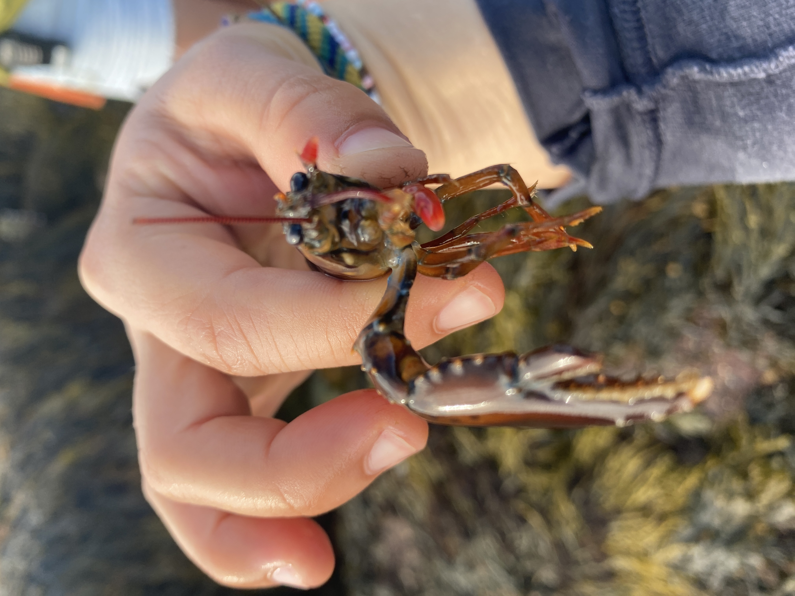

ITZ Research
Finding a baby lobster under a rock in the ITZ. Catching is the hard part, they're fast.
Environmental Steward and Educator • Hurricane Island Center for Science and Leadership
During my AmeriCorps service term with the Maine Conservation Corps, I served as an Environmental Steward and Educator at the Hurricane Island Center for Science and Leadership. My role centered on delivering place-based coastal and environmental science programming for students, particularly those with geographic or socioeconomic barriers to coastal and marine science, across Maine.
My service strengthened my commitment to community‑centered environmental research and education. I was lucky to educate over 300 students from all over Maine and the East coast of the US. We had students come from extremely local places such as Rockland and Islesboro, while some groups traveled from Philedelphia and NYC. I helped to recruit over 10 volunteers.

Educating middle-school and high-school students was the core part of my service. From Plankton Lab and Scallop Dissections to Freshwater Ecology lessons to exploring the intertidal zone (ITZ) and Hurricane Island's aquaculture farm, we used field guides, our observation skills, microscopes, and curiosity to explore and learn about our natural environment.

Finding a baby lobster under a rock in the ITZ. Catching is the hard part, they're fast.
I created some of my own lessons around erosion and knot tying/rope art.
I led hikes on the history of Hurricane Island, focusing on the Quarry Era from 1869-1914. Encouraged students to think about human impact on landscapes through time.
Sustainability hikes were one of my favorites
This is the lower clivus, one of the main bathroom and composting toilets on Hurricane.
Started off strong in early June with MCC training at Camp Mechuwana in Winthrop, ME where I got to meet fellow Environmental Stewards and field team crews serving all across Maine.
Also got to hit some rocks really hard INSERT IMAGE OF SPLITTING THE ROCKS
Living in an intentional community was a true highlight of my time. Cleaning - aka dancing - after meals with staff, students, and participants was a joy.
I dipped my toes into other departments and teams on the island including facilities, the galley, and boat operations...
With the Facilities crew I ...(drumroll please)... scooped everyone's poop! This included raking the clivus's, emptying outhouse bins into larger composting bins, adding wood shavings to human waste, and cleaning shared bathroom spaces.
In the Galley, I occasionally helped taste a dish before it was served to make sure it was safe to consume.
I helped with lots and lots of dishes; my favorite dish to clean is probably tongs. I learned sometimes it takes 3 people to scrub out baked mac n cheese trays.
Snack creation, salad creation, and putting serving dishes out to feed our crews was also where I lent a hand.
I don't volunTEEEEEER you !!
insert image of serving with volunteers!!!!!!
Recruiting, collaborating with, and managing volunteers was a place where I experienced a lot of growth.
Also earned the Volunteer Management Course Level ___ badge :)
BOAT STUFF
I'm grateful that I developed my skills in powerboat operation and navigation.
INSERT PICTURE OF ME DRIVING THE BOAT OR A BOAT ANY BOAT
I told Captain Michael that I would love to learn as much as I can about boats, knots, and driving them and I'm grateful to him for teaching me boat loads.
Story about driving the boat to drop off the girl's phone that she forgot (and she was from Boston)
Ultimately logged over __ hours as a deckhand and independently operated over __ hours
Here are a few representative images you can replace with your own: